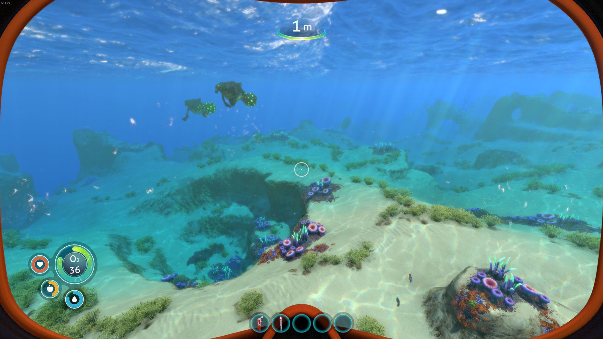
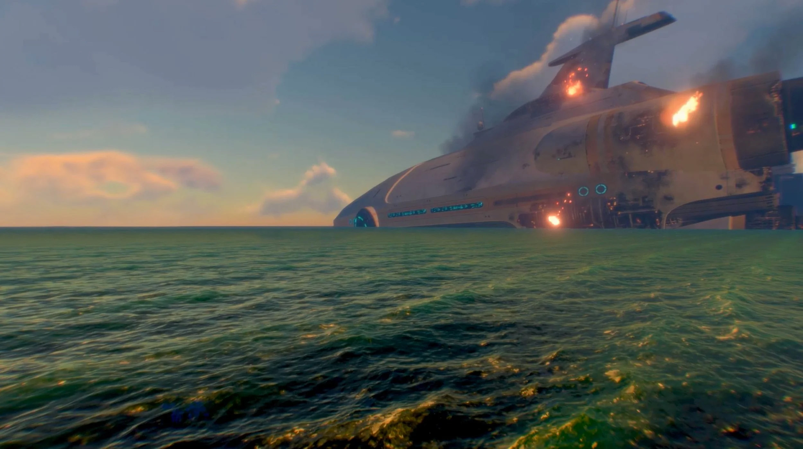

What is Subnautica?
Subnautica is a 2018 action-adventure survival game developed and published by Unknown Worlds Entertainment. The player controls Ryley Robinson, a survivor of a spaceship crash on an alien oceanic planet, which they are free to explore. The main objectives are to find essential resources, survive the local flora and fauna, and find a way to escape the planet.
On a remote ocean planet known as 4546B, the main objective is to explore the ocean and survive its dangers while completing tasks to advance the plot. Players can collect resources and blueprints, construct tools, build bases and submersibles, and interact with the planet's wildlife. Some of the most extreme dangers to the player include but are not limited to: Crabsquids, Warpers, Mesmers, Bonesharks, Ampeels, Stalkers, Crashfish, and Leviathan-class lifeforms like the Reaper, Sea Dragon and Ghost Leviathans.
Why Do I Like Subnautica?
I first saw Subnautica gameplay when I was less than 10 years old during its alpha stages. Once I saw it, I knew I wanted to play it. My family was not a very video game oriented one, so we did not have much gaming equipment. So I grabbed my parent's laptop and was able to convince them to download it. It ran so badly I had to minimize the screen to even get it to run smoothly. But I had so much fun building bases in the creative sandbox mode. To this day, although I have much better equipment than I did then, I still have not beaten it. So I couldn't even spoil it for you if I could, and if I had beaten it, I wouldn't spoil it for you anyway. My reason for my inability to finish it is how scary they manage to make the ocean. I hope to beat it some time this summer.
Subnautica Gameplay


Should You Play Subnautica?
Yes. A million times yes. Although I have not beaten it, the journey to the ending is well worth it. It is one of the greatest games I have ever played, a Top 4 game and you should expierance it as well. Below I will attach a link to the Steam page if you wish to buy it, but it is available on all gaming platforms. And a sequel is on the way soon!
Still unsure? Here's the trailer!